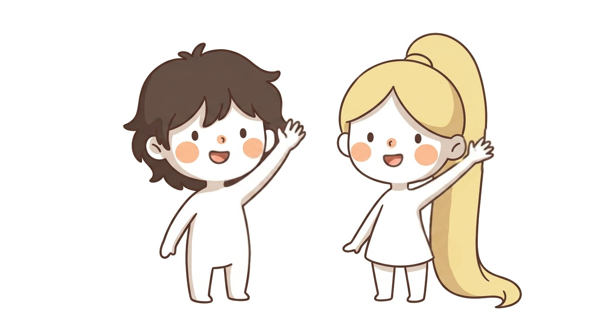
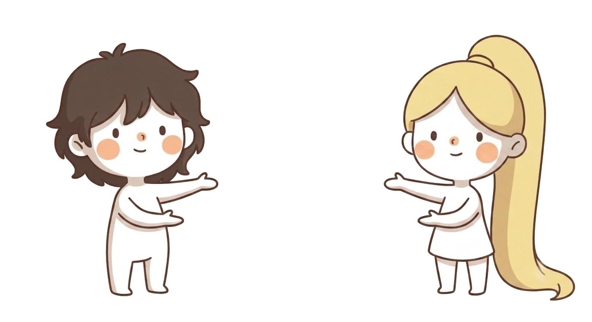
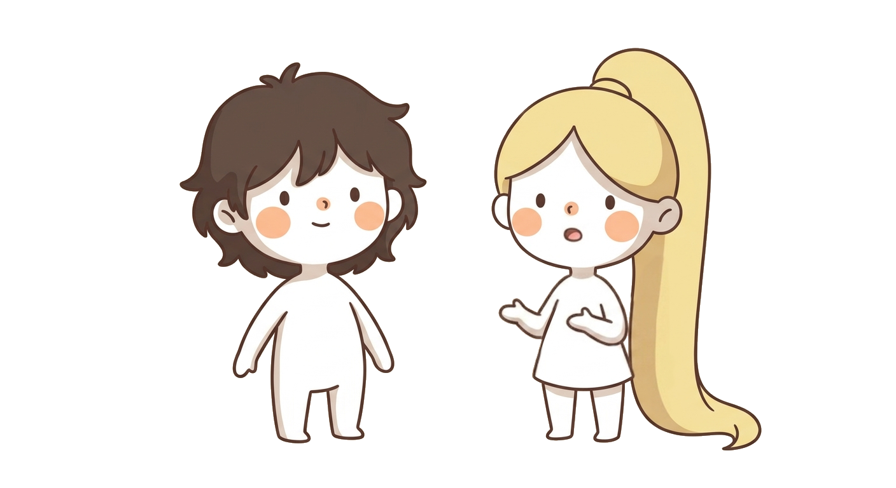
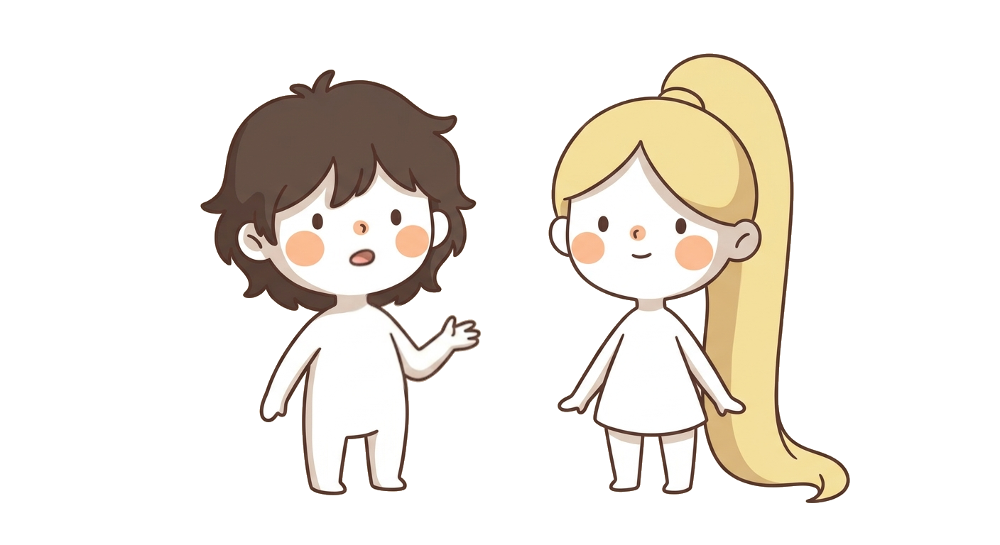
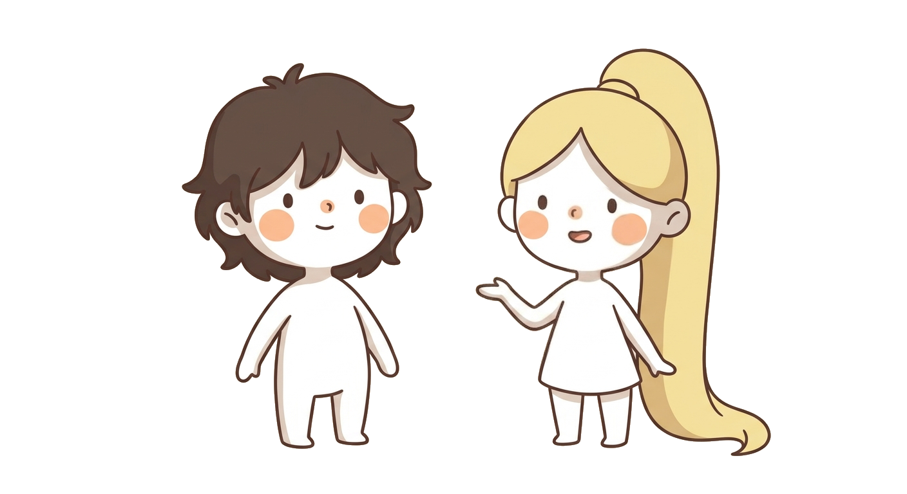
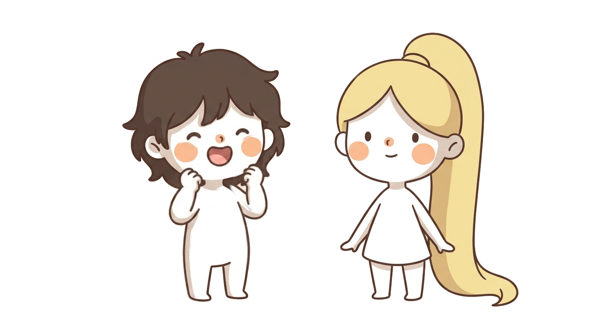

First
time?

This morning, when I woke up, a thought crossed my mind:


Je veux aider toute la planète à apprendre le français.

I want to help the whole world learn French.

So I asked my friend Keb to help me. He always has good ideas.

Great! Let's make a website with points, achievements, trophies, cards to collect! You do the drawings, I'll organize.
¿Primera vez?
Primeira vez?
Prima
volta?
第一次吗？
처음이세요?
初めてですか？
Lần đầu tiên?
Unang
beses?
Erstes
Mal?
Eerste
keer?
Primera
vegada?
Premye
fwa?
Pertama
kali?
اولین بار؟
Первый
раз?
Første
gang?
Första
gången?
Unua
fojo?